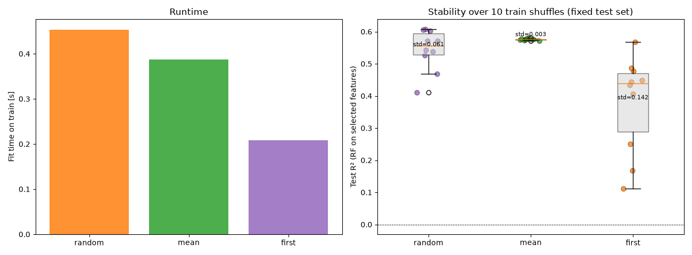

Note
Go to the end to download the full example code.
FOCI tie-breaking: speed and stability#
FOCISelector needs the nearest neighbor of each sample in the
currently selected feature subspace. When features are discrete (or
otherwise low-cardinality) many samples share the exact same distance,
so ties of equally-close neighbors exist.
This example shows how different methods to break these ties (set via
nn_tie_breaking="random", "mean", or "first") influence
speed and stability of the selection.

Data: n=700, p=30, levels=3, k=5
Train: 525, Test: 175
random: 0.45s -> [1, 0, 3, 23, 4]
mean : 0.39s -> [1, 0, 3, 4, 6]
first : 0.21s -> [9, 27, 29, 0, 1]
Speed-up first vs random: 2.2x, vs mean: 1.9x
random: 10 unique sets over 10 train shuffles | Test R² mean=0.5446 std=0.0605 min=0.4108 max=0.6080
mean : 1 unique sets over 10 train shuffles | Test R² mean=0.5759 std=0.0026 min=0.5709 max=0.5810
first : 10 unique sets over 10 train shuffles | Test R² mean=0.3795 std=0.1422 min=0.1115 max=0.5670
import time
import matplotlib.pyplot as plt
import numpy as np
from sklearn.ensemble import RandomForestRegressor
from sklearn.metrics import r2_score
from sklearn.model_selection import train_test_split
from pyFOCI import FOCISelector
# ----------------------------------------------------------------------
# 1. Synthetic discrete data with many NN ties – train/test split
# ----------------------------------------------------------------------
N_SAMPLES = 700
N_FEATURES = 30
N_LEVELS = 3
K_SELECT = 5
DATA_SEED = 0
TRAIN_FRACTION = 0.75
rng = np.random.RandomState(DATA_SEED)
X = rng.randint(0, N_LEVELS, size=(N_SAMPLES, N_FEATURES)).astype(float)
X_centered = X - X.mean(axis=0)
weights = np.linspace(1.0, 0.6, 8)
y = X_centered[:, :8] @ weights
y += 0.8 * (X[:, 0] * X[:, 1])
y += 1.2 * rng.normal(size=N_SAMPLES)
X_train, X_test, y_train, y_test = train_test_split(
X, y, train_size=TRAIN_FRACTION, random_state=DATA_SEED
)
print(f"Data: n={N_SAMPLES}, p={N_FEATURES}, levels={N_LEVELS}, k={K_SELECT}")
print(f"Train: {X_train.shape[0]}, Test: {X_test.shape[0]}")
# ----------------------------------------------------------------------
# 2. Speed comparison on train set
# ----------------------------------------------------------------------
timings = {}
selected = {}
for tie in ["random", "mean", "first"]:
sel = FOCISelector(
max_features=K_SELECT,
min_delta=None,
nn_tie_breaking=tie,
random_state=0,
)
t0 = time.perf_counter()
sel.fit(X_train, y_train)
dt = time.perf_counter() - t0
timings[tie] = dt
selected[tie] = sel.selected_indices_.copy()
print(f"{tie:6s}: {dt:5.2f}s -> {sel.selected_indices_.tolist()}")
print(
"\nSpeed-up first vs random: {:.1f}x, vs mean: {:.1f}x".format(
timings["random"] / timings["first"], timings["mean"] / timings["first"]
)
)
# ----------------------------------------------------------------------
# 3. Order dependence via held-out RF R²
# Shuffle *training* rows only, keep test set fixed.
# ----------------------------------------------------------------------
N_PERMS = 10
perms = [np.random.RandomState(s).permutation(X_train.shape[0]) for s in range(N_PERMS)]
results = {tie: {"selected": [], "r2": []} for tie in ["random", "mean", "first"]}
for perm in perms:
Xp_train, yp_train = X_train[perm], y_train[perm]
for tie in results:
sel = FOCISelector(
max_features=K_SELECT,
min_delta=None,
nn_tie_breaking=tie,
random_state=0,
standardize=None,
)
sel.fit(Xp_train, yp_train)
sel_idx = sel.selected_indices_
results[tie]["selected"].append(tuple(sel_idx.tolist()))
rf = RandomForestRegressor(n_estimators=100, random_state=0, n_jobs=-1)
rf.fit(Xp_train[:, sel_idx], yp_train)
y_pred = rf.predict(X_test[:, sel_idx])
r2 = r2_score(y_test, y_pred)
results[tie]["r2"].append(r2)
for tie in results:
r2_arr = np.asarray(results[tie]["r2"])
uniq = set(results[tie]["selected"])
print(
f"\n{tie:6s}: {len(uniq)} unique sets over {N_PERMS} train shuffles | "
f"Test R² mean={r2_arr.mean():.4f} std={r2_arr.std():.4f} "
f"min={r2_arr.min():.4f} max={r2_arr.max():.4f}"
)
# ----------------------------------------------------------------------
# 4. Plot – runtime (lower is faster) + stability via R²
# ----------------------------------------------------------------------
fig, axes = plt.subplots(1, 2, figsize=(13, 4.8))
# Left: runtime – lower bar = faster, so title must not say "more speed = higher"
axes[0].bar(
timings.keys(),
timings.values(),
color=["tab:orange", "tab:green", "tab:purple"],
alpha=0.85,
)
axes[0].set_ylabel("Fit time on train [s]")
axes[0].set_title("Runtime")
# Right: R² stability
tie_order = ["random", "mean", "first"]
colors = {"first": "tab:orange", "mean": "tab:green", "random": "tab:purple"}
r2_data = [results[t]["r2"] for t in tie_order]
axes[1].boxplot(
r2_data,
tick_labels=tie_order,
patch_artist=True,
boxprops=dict(facecolor="lightgray", alpha=0.5),
)
for i, tie in enumerate(tie_order, start=1):
y_vals = results[tie]["r2"]
x_jitter = np.random.RandomState(i).normal(loc=i, scale=0.05, size=len(y_vals))
axes[1].scatter(
x_jitter,
y_vals,
color=colors[tie],
alpha=0.8,
s=45,
edgecolor="black",
linewidth=0.4,
)
axes[1].text(
i, np.mean(y_vals) + 0.01, f"std={np.std(y_vals):.3f}", ha="center", fontsize=8
)
axes[1].set_ylabel("Test R² (RF on selected features)")
axes[1].set_title(f"Stability over {N_PERMS} train shuffles (fixed test set)")
axes[1].axhline(0, color="black", linewidth=0.6, linestyle="--")
fig.tight_layout()
plt.show()
Total running time of the script: (0 minutes 15.994 seconds)